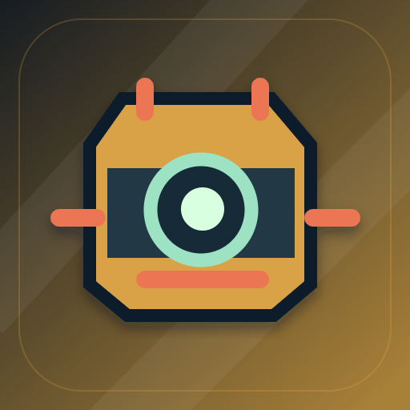

<- all projects

Liga da Sucata
PC
Volume
Live
Build the machine. Outsmart the league.
Jo and Bia need to keep their workshop alive. Build a fighting robot from salvaged parts within the same 34-scrap budget every rival respects, read the rival's three announced commands and queue your own before each eight-second physical clash. Mass, reach, heat and arena hazards decide the result, and at 100 heat your tools lock until they cool. There are 12 story contracts, eight-fixture leagues and seeded draft cups with a daily cup, built from 6 chassis, 12 tools, 8 cores and 6 arena hazards, against 12 rivals with readable habits. Replays show exactly why you won or lost.